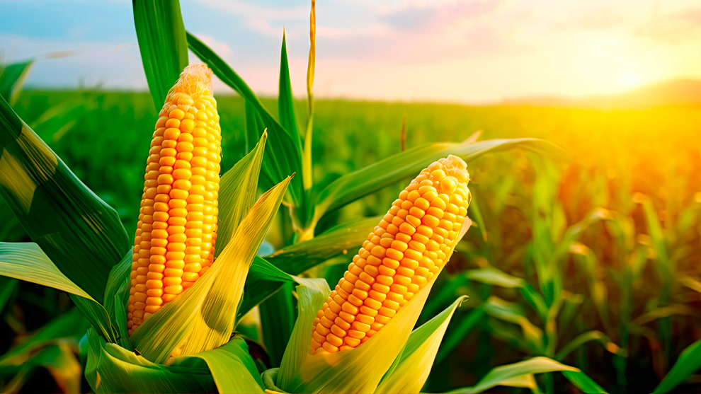
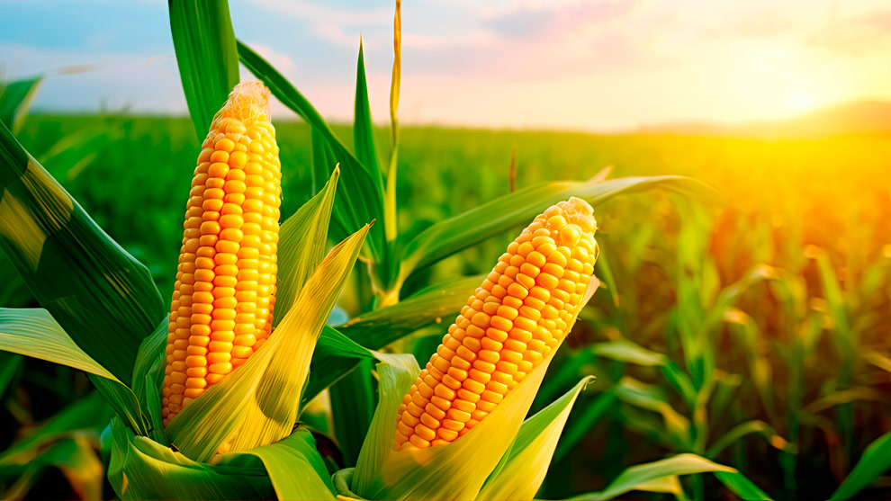

.jpeg)
Indice temático
¿Quienes somos?

0Sabor directo.
Somos un grupo de tres jóvenes que en busca de una solución a los altos precios que se establecen en algunos supermercados, y lo poco que se potencia el sector del agro del municipio, desarrollamos una iniciativa llamada "Sabor directo". Un emprendimiento que no solo ofrece alimentos frescos y diversos por medio de un mercado digital, sino que aspira a ser un destino culinario donde los amantes de la comida pueden descubrir, aprender y conectarse con el campo. La plataforma no es solo una tienda, es el comienzo de una emocionante aventura culinaria.
¿Que nos guia?
.png)
Misión.
En "Sabor directo", nuestra misión es ofrecer una experiencia al cliente única y accesible, conectando a los amantes de la comida con alimentos frescos a precios accesibles. Nos esforzamos por ser más que una simple tienda online, siendo un destino donde las personas se sienten felices con lo que compran y la forma en como el producto llega a sus manos.
.png)
Visión.
Aspiramos a ser un referente en la venta de alimentos online, destacando por nuestra diversidad de productos frescos y gourmet. Buscamos construir una gran comunidad donde la conexión entre productores locales y consumidores se fortalezca, promoviendo la transparencia y la sostenibilidad.
Mas informacion....png)
Valores
- 1. Calidad: Nos comprometemos a ofrecer alimentos de la más alta calidad, seleccionados con cuidado y entregados frescos a nuestros clientes.
- 2. Transparencia: Valoramos la honestidad en cada paso de nuestra cadena de suministro, desde la selección de productos hasta la entrega final.
- 3. Sostenibilidad: Nos esforzamos por minimizar nuestro impacto ambiental, trabajando directamente con productores locales y adoptando prácticas respetuosas con el medio ambiente.
- 4. Pasión por la Gastronomía: Compartimos y fomentamos la pasión por la buena comida, creando un espacio donde los clientes pueden explorar, aprender y disfrutar de nuevas experiencias culinarias.
- 5. Comunidad: Buscamos construir una comunidad activa y comprometida, donde productores, clientes y amantes de la comida se conecten, compartan conocimientos y celebren la diversidad culinaria.
- 6. Innovación: Abrazamos la innovación en la presentación de productos, en la experiencia de compra y en la promoción de nuevas tendencias gastronómicas.
Visita nuestra tienda online.
Galeria


 
